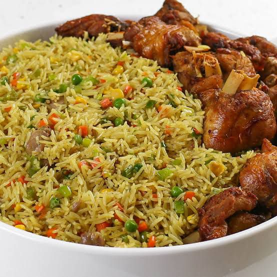

Nigerian Fried Rice is a vibrant party staple made by stir-frying parboiled rice
with mixed vegetables, liver or shrimp, and curry-spiced stock. It’s colorful,
slightly sweet from the veggies, and packed with savory flavor

Calories: 227kcal Carbohydrates: 27g Protein: 7g Fat: 9g Saturated Fat:
1g
Cholesterol: 45mg Sodium: 257mg Potassium: 235mg Fiber: 2g Sugar: 2g
Vitamin A: 4635IU
Vitamin C: 7.6mg Calcium: 26mg Iron: 1.6mg
Visit All Nigerian Recipes for more details